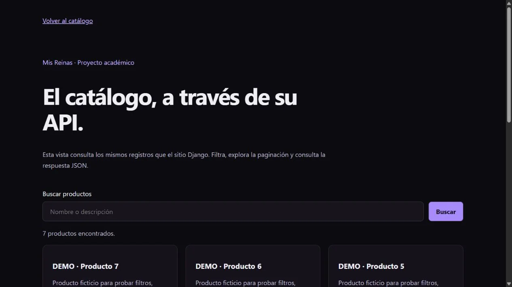
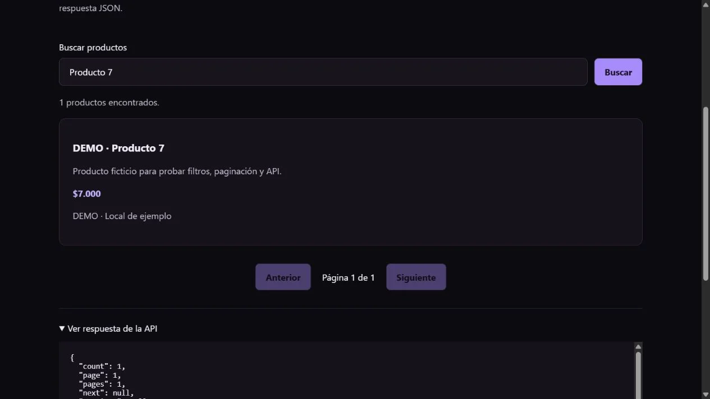

Contexto y responsabilidades
La versión más completa del proyecto académico se encontraba en el equipo local. La evolución documentada integró ese catálogo con su repositorio y añadió una API de lectura y una demostración reproducible. El caso reúne modelos, vistas, plantillas y JavaScript para explicar cómo una misma fuente de datos puede servir a una página renderizada y a un consumidor JSON. La mejora técnica se realizó con asistencia de IA.
Modelo de datos y contrato público
Una oferta pertenece a una sucursal y puede tener varias categorías. La API devuelve esas relaciones junto a los datos de la oferta. El precio se transmite como texto decimal; null representa un importe desconocido y no equivale a cero. La respuesta de listado incluye cantidad, página, número de páginas y enlaces de navegación. Los filtros se aplican antes de dividir los resultados.
Interfaz y recuperación ante fallos
El explorador consulta la API mediante fetch y distingue carga, resultados, lista vacía y error. La paginación permite navegar sin conocer la estructura interna de Django. Al cambiar la consulta se cancela la anterior para evitar que una respuesta antigua reemplace los resultados recientes. El contenido se incorpora con textContent para mostrar los datos como texto.
Seguridad y administración
La API pública permite consultar con GET y HEAD; las modificaciones corresponden al Admin autenticado. La configuración separa claves y valores del entorno, exige una clave independiente para producción y activa controles HTTPS según el modo de despliegue. Las pruebas comprueban errores JSON, límites de página, escape de contenido y protección CSRF. Esto no sustituye una auditoría de un entorno de producción.
Instalación y demostración reproducible
El repositorio incluye requisitos fijados, migraciones y seed_demo. El comando crea registros ficticios identificados como DEMO y puede repetirse sin duplicarlos. Las capturas de este caso proceden de una base de demostración aislada, sin datos de usuarios. El backend se ejecuta localmente; GitHub Pages aloja este caso de estudio y el código se encuentra en el repositorio enlazado.
Verificación del catálogo
La entrega documentada incluye diez pruebas de páginas, filtros, paginación, errores, escape, CSRF y solo lectura. El catálogo incorpora consultas relacionadas para limitar accesos repetidos a la base. El formulario de contacto valida datos, pero no envía mensajes; la API externa específica de la evaluación continúa pendiente de definición.
Arquitectura del proyecto
Esquema de responsabilidades. La descripción técnica distingue los componentes y su función.
Evidencias visuales





Selecciona una imagen para ampliarla. Presentación monocromática; los enlaces oficiales conservan el diseño original.